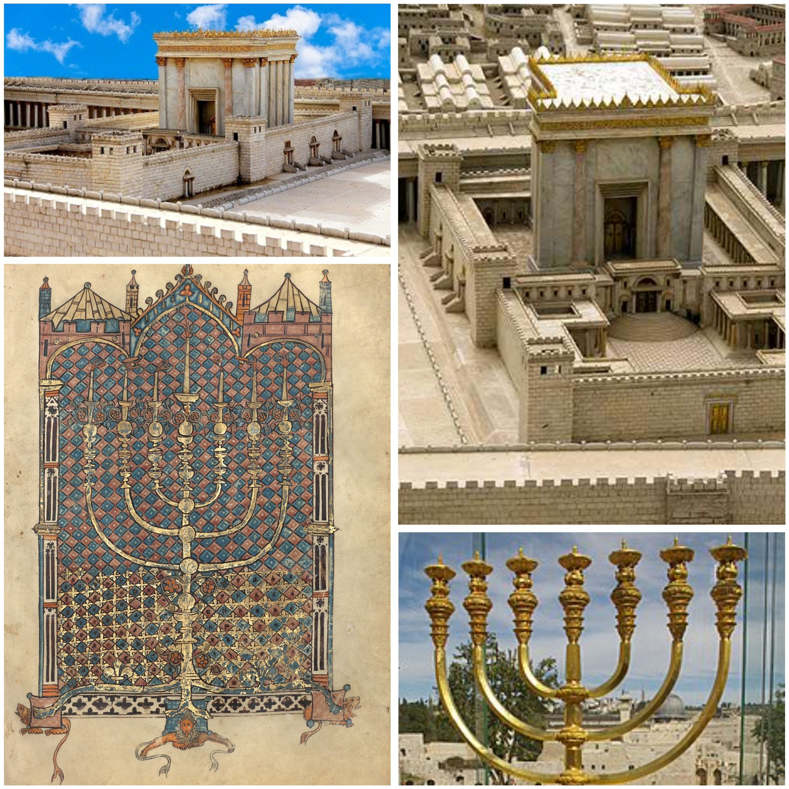
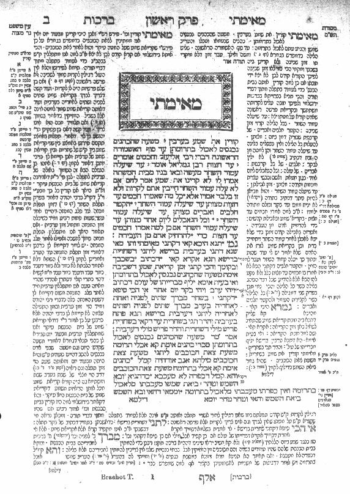

בית המקדש השני - היה הסמל המרכזי ביותר של הדת היהודית. הוא היה מקום הפולחן, וגם סמל לשלטון היהודי בארץ ישראל
המנורה - מנורת המקדש הייתה סמל מרכזי בתרבות היהודית. היא הופיעה על מטבעות שהוצאו במהלך המרד הגדול

ההלכה היהודית - היא נחשבה למערכת החוקים שהמשיכה לשמור על הזהות היהודית במציאות של שלטון רומאי
ההלכה לא רק קבעה את דרכי הפולחן, אלא גם את כל תחום החיים כמו אוכל, טהרה, תפילה, התנהגות אישית ומשפחתית
בתקופה זו, העם היהודי שמר על אורח חיים דתי מאוד, על פי ההלכה.
החיים בצניעות - העקרונות האלו נבעו מתוך ההלכה היהודית, והם עזרו לשמור על המורשת והזהות היהודית בעידן שבו השפעות רומאיות היו חזקות
במיוחד, היה דגש על צניעות בלבוש, בהתנהגות האישית ובאינטראקציות בין גברים לנשים.
אחת התכונות הבולטות של התרבות היהודית בתקופה הזו הייתה הדגש על צניעות.

1) הכוהנים הגדולים היו דמויות מאוד משפיעות, במיוחד בירושלים, שם הם ניהלו את העבודה הדתית בבית המקדש והשפיעו על הקהל. יהושע בן גמלא היה אחד הכוהנים הגדולים הבולטים, שעסק בשמירה על הדת וההנהגה הדתית בתקופה זו.
2) מנהיגי הקנאים, כמו אלעזר בן חנניה, התנגדו לשלטון הרומאים ונלחמו כדי לשמור על העצמאות הדתית והלאומית של העם היהודי.
הם היו ממובילי ההתקוממות והאמינו שדרך המרד אפשר להגן על ערכי הדת היהודית.
המרד הגדול התחיל בגלל כמה סיבות שהיו קשות מאוד ליהודים בתקופה ההיא.
הרומאים ששלטו בארץ פגעו ביהודים, במיוחד הנציב פלורוס שלקח כסף מבית המקדש וגרם לכעס רב.
החברה הייתה מחולקת לקבוצות שונות, היו את האנשים העשירים כמו הכוהנים, ששיתפו פעולה עם הרומאים, והיו את האנשים הפשוטים שהיו עניים וסבלו ממסים כבדים גם בתוך העם היו דעות שונות, הקנאים והסיקריים רצו להילחם ברומאים, לעומת קבוצות כמו הפרושים והצדוקים שהעדיפו דרכים שקטות יותר ולא תמיד הסכימו איתם.
כל זה יצר הרבה בלגן ופיצול בעם.
בנוסף, המצב הכלכלי היה קשה מאוד, והרבה אנשים לא הצליחו להתפרנס.
כשפלורוס התחיל לפגוע בבית המקדש, שהוא היה המקום הכי קדוש ליהודים, זה היה יותר מידי בשבילם.
כל הדברים האלה ביחד גרמו ליהודים להחליט למרוד ברומאים
המרד הגדול הובל על ידי מספר מנהיגים חשובים, יוסף בן מתתיהו ושמעון בר גיורא היו שניים מהם.
יוסף בן מתתיהו היה מפקד המרד בגליל.
תכונות האופי הרצויות של יוסף היו חוכמה ותבונה. הוא היה אדם חכם וידע איך לנהל את הלחימה בצורה טובה וחכמה. יוסף היה גם מאוד מנוסה וידע למצוא פתרונות לשינויים שקרו סביבו, לפעמים הוא העדיף למצוא פתרונות מהירים ולא להילחם עד הסוף מה שגרם לחלק מהאנשים לא להסכים איתו.
שמעון בר גיורא לעומת זאת, היה מנהיג במרד בירושלים.
תכונות האופי הרצויות של שמעון היו אומץ ונחישות. שמעון היה לוחם אמיץ שלא פחד להילחם נגד הרומאים, אפילו כשהמצב היה קשה. הוא היה נחוש ונלחם עד הסוף, והצליח להוביל את הלוחמים בצורה החלטית.
שני המנהיגים היו שונים בתכונות שלהם, יוסף היה חכם ומנוסה, ושמעון היה לוחם אמיץ ונחוש. כל אחד מהם היה חשוב למרד בדרכו.
הפרושים – הפרושים התחילו להתפתח אחרי חורבן בית המקדש הראשון.
הם הבינו שלא חייבים מקדש כדי לשמור על הדת היהודית. הם האמינו שצריך לשמור על התורה לא רק שבכתב, אלא גם על התורה שבעל פה.
הם היו מאוד חשובים אחרי חורבן הבית השני, והם שמרו על הדרך היהודית.
הם לא היו חלק מהמרד כי הם פחדו שזה רק יפגע יותר, ולכן הם לא רצו להילחם ברומאים.
הם היו רלוונטיים למרד כי הם התנגדו לו.
הצדוקים – הצדוקים היו כוהנים במקדש שהיו קשורים לרומאים.
הם חשבו שצריך לשמור על קשר טוב עם הרומאים, כי הם ראו בזה יציבות.
הצדוקים לא היו חלק מהמרד, כי הם לא רצו לעורר בעיות עם הרומאים.
הם לא חשבו שצריך להילחם בהם, ולכן הם לא היו רלוונטיים ישירות למרד.
הם רק היו קשורים לרומאים.
הקנאים – הקנאים התפתחו מתוך הרבה תסכול על הרומאים.
הם לא רצו שום קשר עם הרומאים, והם חשבו שהדרך היחידה לשמור על היהדות והארץ היא להילחם.
הם הובילו את המרד הגדול והיו חלק חשוב ממנו.
הקנאים היו רלוונטיים למרד כי הם היו המובילי המרד.
הסיקריים – הסיקריים התפצלו מהקנאים והיו הרבה יותר קיצוניים.
הם השתמשו באלימות כדי להילחם ברומאים וביהודים שעזרו להם.
הם חשבו שאין דרך אחרת אלא להילחם בכוח.
הסיקריים היו חלק חשוב במרד, והם היו רלוונטיים כי הם היו הכת שהשתמשה באלימות והם גם גרמו לחלק מהפיצולים בתוך העם.
בסופו של דבר כל קבוצה התפתחה בגלל רעיונות שונים על איך צריך להתמודד עם הרומאים.
כל קבוצה הייתה רלוונטית למרד בדרכים שונות חלק התנגדו, חלק הובילו את המרד, וחלק השתמשו באלימות.
כל קבוצה השפיעה איך המרד התנהל.
מנהיגי המרד רצו לשמור על כמה דברים חשובים.
קודם כל, הם אהבו את ארץ ישראל ורצו לשמור עליה ולשחרר אותה מהרומאים.
הם גם רצו חירות דתית, כלומר לקיים את הדת היהודית בלי שהרומאים יתערבו.
בנוסף, הם האמינו בכבוד לאומי ורצו שהעם היהודי יהיה חופשי, בלי שליטים זרים שיגידו להם מה לעשות.
הם גם רצו היאבק בעוול של הרומאים, כי הם חשבו שהרומאים פוגעים בעם היהודי.
לכן, הם יצאו למרד כדי לשחרר את העם ולשמור על כבודו וחירותו.
הם חשבו שזה היה הכרחי, גם אם זה היה קשה.
הנציב פלורוס היה שליט רומאי בארץ ישראל בזמן המרד הגדול.
הוא לא היה דמות אהובה על היהודים, כי הוא עשה הרבה דברים רעים.
למשל, הוא לקח כסף מהמקדש בירושלים, מה שעשה את היהודים מאוד כועסים.
בנוסף, כשהיו מרידות קטנות, פלורוס היה דורס אותן בכוח ובאכזריות.
כל הדברים הרעים שהוא עשה גרמו ליהודים לכעוס עליו מאוד.
הדמות של פלורוס חשובה לסיפור המרד, כי ההתנהגות הרעה שלו גרמה להרבה יהודים להרגיש שאין ברירה אלא להילחם נגד הרומאים.
המרד פרץ, בין השאר, בגלל העוול שהוא עשה.
העוול שפילוס עשה היה בכך שהוא לא רק פגע בכבוד ובמעמד הדתי של היהודים, אלא גם הראה זלזול מוחלט בחוקים של הארץ ובמנהגי המקומיים.
הוא המשיך לנצל את העם היהודי, מה שהוביל להתדרדרות נוספת במערכת היחסים בין הרומאים ליהודים ותרם להתפרצות המרד.
תוצאות המרד הגדול היו הרסניות מאוד עבור העם היהודי.
אחרי שנים של קרב, הרומאים הצליחו לכבוש את ירושלים בשנת 70 לספירה.
בית המקדש השני, שהיה מרכז הדת והחיים היהודיים, נחרב לחלוטין, וזה היה פצע קשה לעם היהודי.
הרבה אנשים נהרגו במהלך המרד, והיו אלפי פליטים יהודים שנאלצו לברוח מהארץ.
הרומאים גם לקחו עימם את רוב הזהב והאוצרות מהמקדש, והשאירו את ירושלים חרבה.
למרות התוצאות הקשות אנחנו חושבות שהיה צריך לצאת למרד הגדול נגד הרומאים בגלל שני הסיבות הבאות :
ראשית, הרומאים לא רק שלטו בארץ ישראל, אלא הם גם פגעו בעם היהודי באופן חמור. הם לקחו כסף מהמקדש, הכניסו שליטים רעים כמו פלורוס, והתנהגו באכזריות כלפי היהודים. כל הדברים האלה גרמו לכעס רב בקרב העם, וזה היה מצדיק את המרד.
שנית, הרומאים ניסו לשלוט על כל תחום בחיים של היהודים, כולל הדת. העם היהודי לא רצה להפסיק לקיים את הדת היהודית באופן חופשי, ולא רצה להיות תחת שלטון זר שיבטל את האמונות והמנהגים שלו. המרד היה דרך להיאבק על החירות והדת היהודית.
לכן, אנחנו חושבות שהיה צורך לצאת למרד, למרות הסיכון והקושי, כדי להילחם על הזכויות של העם היהודי.
לבסוף אנחנו מבינות שלמרות שהתוצאות היו נוראיות, היו גם ערכים חשובים שמאחוריהם יצא המרד. מרד כזה, שבו העם נלחם על עקרונות דתיים וחופשיים, הוא דבר שצריך להילחם עליו, גם אם יש סיכון גדול. המרד הגדול היה רגע משמעותי בתולדות העם היהודי, והיה נכון לצאת אליו, למרות החורבן שנגרם בסופו של דבר.